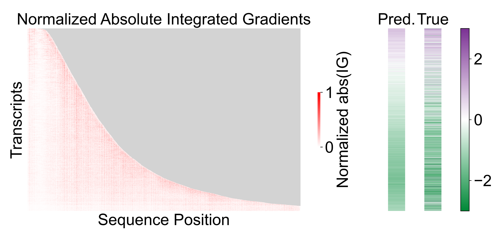
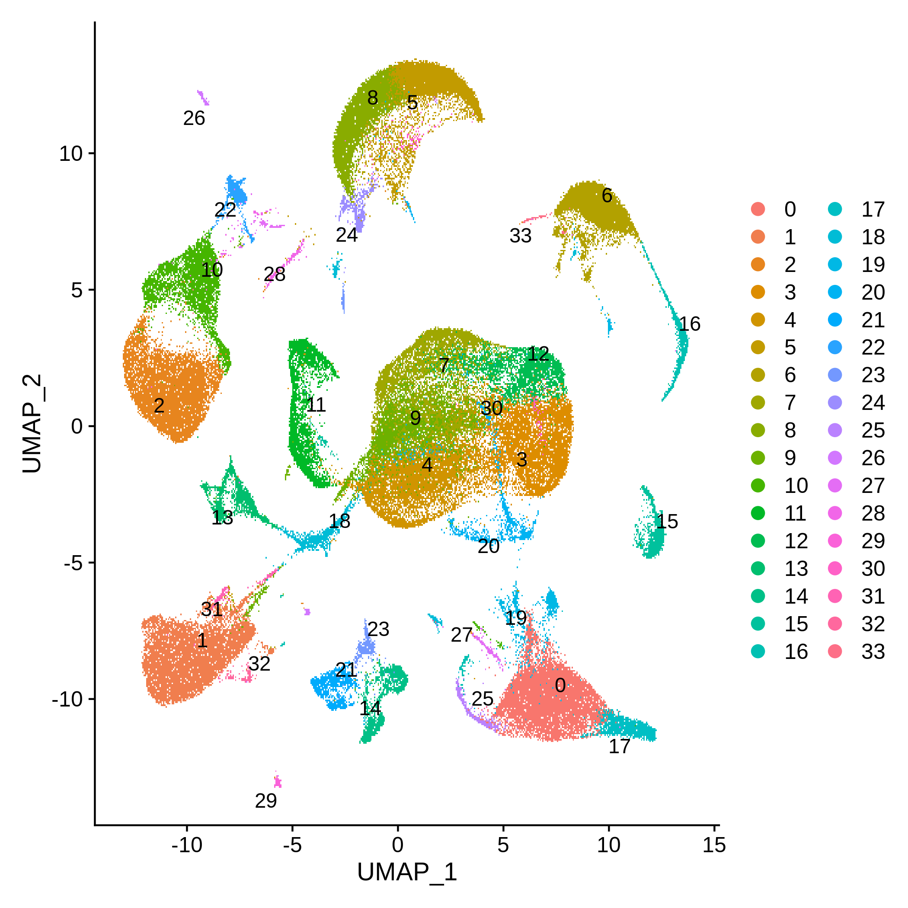
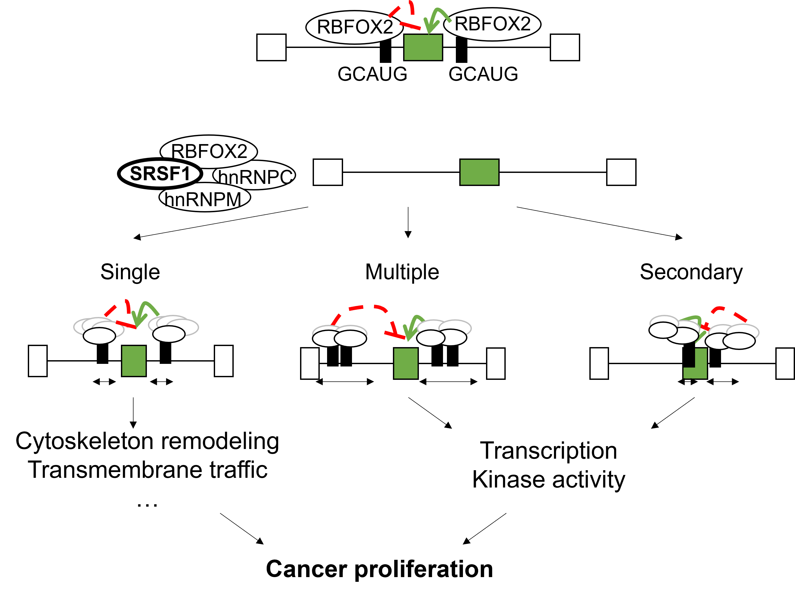
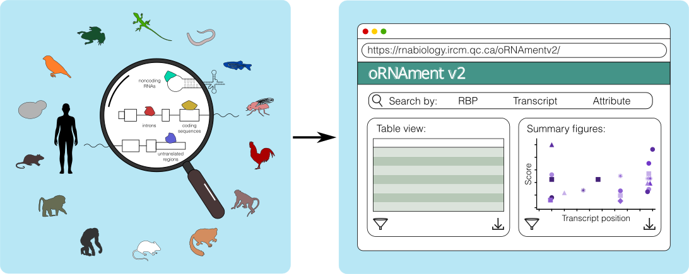
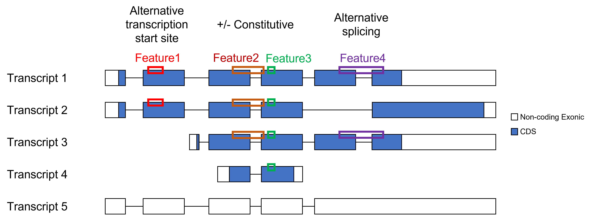
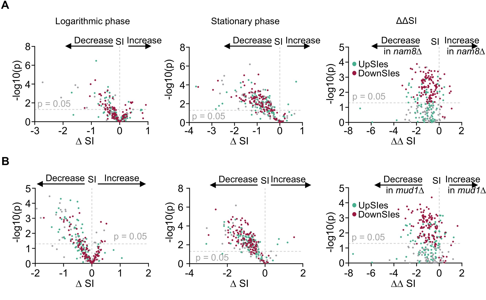
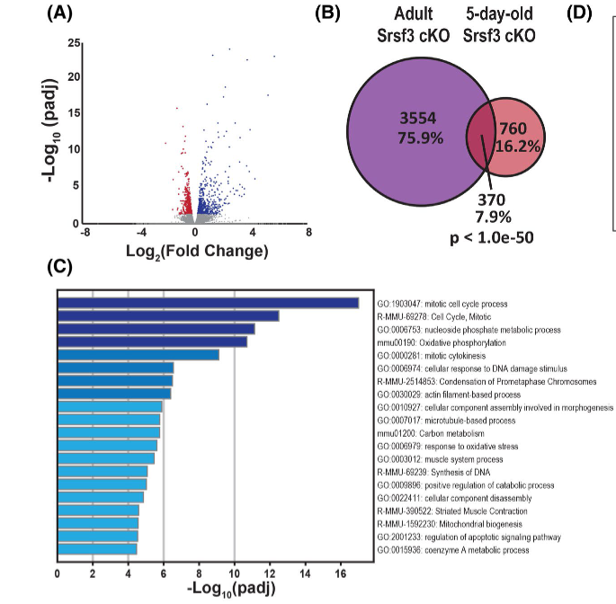
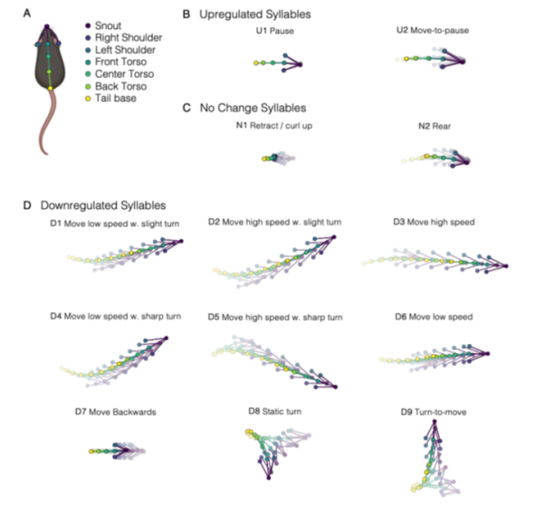

Delong Zhou, Ph.D.
I create RNA-seq data-driven tools
to understand how gene regulation changes
in cancer and neuropsychiatric disorders.
I create RNA-seq data-driven tools
to understand how gene regulation changes
in cancer and neuropsychiatric disorders.
My Current Post-Doc research project at Dr. LÉCUYER Lab of RNA Biology at Institut de recherches cliniques de Montréal (IRCM) aims to predict RNA secretion signals by training machine learning models on RNA-seq data generated in the lab.
Extracellular vesicles (EVs) consist an important cell-cell communication pathway by transporting RNA produced in one cell into another and eliciting changes in the recipient cell. While a lot of existing research studied how small non-coding RNAs are secreted into EVs, the exact mechanism underlying the secretion of messenger RNA (mRNA) into the EV remains unclear.
I built a machine-learning model using Tensorflow & Keras and trained it using RNA-seq data generated in our lab to predict mRNA secretion and identified RNA features that contributed to the predictive power of the model. I explored multiple modal structures to identify the model with the best interpretability. I then validated the results using other RNA-seq datasets from our lab. Further in vitro validations are undergoing.

The manuscript is currently under preparation.
My first Post-Doc research project under Dr. Bagot at McGill University aims to determine how the brain responds to psilocybin, a potential alternative for people unresopnsive to conventional therapy.
While clinical data suggest psilocybin could induce long-lasting anti-depressant effect in human patients, its mechanism of action remain largely unclear.
I first accessed the impact of psilocybin on mouse behaviors using an array of standard behavior tests to measure their anxiety level and social interaction with other mice. My colleagues and I then generated Single-Cell RNA-seq libraries in the mouse prefrontal cortex, a brain region readily affected by depression and targeted by anti-depressants. I analyzed the data to identify the gene activity changes induced by psilocybin, which were further validated by my colleagues with in vivo methods.

The findings will improve our understanding of how psilocybin works, therefore support the development of psilocybin as a novel depression treatment, and provide better care for depression patients.
The preprint is available at bioRxiv.
My PhD project supervised by Dr. Michelle Scott and Dr. Sherif Abou Elela at University of Sherbrooke studied the regulation of RNA alternative splicing, a process through which one gene can produce multiple RNA isoforms, leading to different protein activities with the potential of deciding cell fates.
RNA Binding Proteins (RBPs) are major regulators of RNA alterantive splicing. However, there is a huge discrepancy between RBP-RNA interaction data and the splicing changes caused by change in RBP expressions.
With the help of my colleagues I generated bulk RNA-seq data where the expression of multiple RBPs are reduced. I then analyzed the data to identify how the change in RBP expression impacted on the splicing profile. Using public available datasets, I discover that RBPs form a splicing-regulating complex whose regulating power changes in function of its binding configuration. I further validated my findinds through a wide range of in vitro approaches.

This work shows how RBPs can regulate alternative splicing beyond their direct interacting targets, thereby extending their regulatory capacity to previously overlooked events.
The work is published in Nucleic Acid Research.
oRNAment v2 is the updated version of oRNAment, a web-based database for putative interactions between RNA and RNA Binding Proteins (RBPs), developed by LÉCUYER Lab of RNA Biology and published in Nucleic Acid Research.

For this updated version, I designed and implemented the data infrastructure for the updated resource, building the DuckDB databases as well as developing the Django-based web application to host and serve the resource. My colleagues focused on generating the underlying data. We collectively contributed to new functionalities and data that constituted the distinguish this version from previously published resource as well as similar tools developed by other groups.
The webtool enables the global mapping of putative RBP binding sites in 15 species and displays the results in an interactive way to facilitate research in RNA regulation.
The updated tool is available at here while the manuscript is under preparation.
SAPFIR is a webtool to explore the functional consequence of RNA alternative splicing, a mechanism that allows one gene to produce multiple RNA isoforms leading to different protein activities and cell fates.

I developed the Enrichment Analysis function, enabling users to upload results of their RNA-seq analysis to help interprete the functional impact of their findings. I also enhanced the Single Gene Annotation function, originally developed by my colleague, expanding its usability. In addition, I updated the Django-based web application and geenrated the latest version of the underlying data.
This tool allows rapid functional annotation of alternative splicing events identified by RNA-seq experiments and enables the identification of cellular functions affected by a defined splicing program.
The updated tool is available at here while the manuscript is published in BMC Bioinformatics. The companion repo can be found here.
In this collaboration led by Julie Parenteau at Dr. Sherif Abou Elela's lab, we investigated how RNA splicing helps cells to adapt to nutrient stress in yeast. We identified that the splicing of a specific set of introns is essential for resisting starvation. These results highlight the role of the spliceosome, the machinery responsible for RNA splicing, as a central hub for environmental signal integration. My analysis of the PolyA RNA-seq experiment revealed a broader splicing switch pattern consistent with previously observed changes in specific genes, providing a more complete view of the underlying mechanism.

In this collaboration between Dr. Scott's lab and Dr. Auger-Messier's lab, we investigated the role of Srsf3 in cardiac function by selectively deleting the gene in heart muscle cells. Our findings demonstrate that loss of Srsf3 disrupts mitochondrial integrity and energy production, leading to cardiomyocyte hypertrophy, impaired contractile function, and early postnatal lethality in mice. These results highlight the critical role of Srsf3 in maintaining mitochondrial homeostasis and cardiac health, providing insights into potential mechanisms underlying mitochondrial dysfunction in heart disease. I analyzed the RNAseq experiment, generated testable hypotheses and identified conclusions that are subsequently evaluated and validated through in vitro experiments.

In this project led by Heike Schuler in Dr. Bagot's lab, we challenge the traditional male-centric metrics in depression research by showing that female mice respond differently to social stress. We show that female mice display unique changes in movement patterns rather than typical social avoidance behaviors. We developed a new metric, based on these movement changes, to better study stress in females. This research highlights the importance of tailoring depression studies to account for differences between sexes. I helped to train the machine learning model to track mouse body parts.
